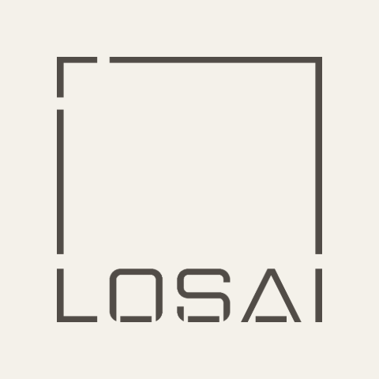
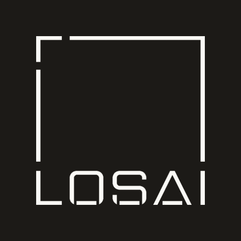

Brand &
system standards
This document and the design system it describes are the property of LOSAI studio. They are supplied in confidence, for the sole purpose of work commissioned by the studio. No part of this system — its typography, colour, components, wordmark or written guidance — may be copied, redistributed, adapted or used in any project, product or publication without the prior written consent of LOSAI studio. Consent is required for every use, including internal prototypes and unpublished work.
Every value here is normative. Where a measurement is given in pixels, implement that pixel value.
| 01 | Identity | Wordmark, lockup, name and tagline |
| 02 | Colour | Surfaces, ink, rules, accent, dark scope |
| 03 | Typography | Two families, two scales |
| 04 | Spacing & geometry | Scale, hairlines, corners |
| 05 | Motion & states | Hover, press, focus, disabled |
| 06 | Components | Eight families, specified |
| 07 | Voice & iconography | Copy rules, permitted glyphs |
| 08 | Standards | The rules that fail review |
| 09 | Implementation | Files, bundle, namespace |
Identity
01The identity is a lockup: the LOSAI mark, the discipline line and the tagline, set together and never re-spaced.
LOSAI is loci — /ˈloʊ.saɪ/, the plural of locus. The studio takes its name from the method of loci, the classical memory technique that binds what you want to remember to a place you already know. The practice describes itself as a team of placemakers: buildings designed as anchors for experience and memory, not only as functional shells.
That idea governs the restraint of this system. A page is a place — ordered, quiet, and legible enough to be remembered. Ornament competes with recall, so there is none.
| Element | Specification | Colour |
|---|---|---|
| Mark | 217 × 44px | #524d48 |
| Gap to rule | 31px | — |
| Rule | 1px × 45px | #c8c4b8 |
| Gap to text | 24px | — |
| Discipline line | Mono 11.43px · 0.15em caps | #8f877f |
| Tagline | Cormorant italic 21.22px · 1.15 | #4c586e |
| Ground | 731 × 132px · mark at 27,47 | #f4f1ea |
Resize the lockup as a single unit. Its internal spacing, rule height and type sizes scale together and are never adjusted independently.
The lockup is never rebuilt. A masthead, a cover, a footer, a title page — each places this same lockup, scaled, cropped to its 45px content band. Nothing is re-composed from its parts: the mark is not resized against a different hairline, and the gaps are not re-set by eye.
The discipline line aligns with the top of the mark. Its capitals and the mark's cap-height share one horizontal, which is what holds the two halves of the lockup together.
The second line is a slot. It carries the tagline on brand surfaces and the project, set in serif — "West 84th Street", not a mono code — on every working surface: mastheads, covers, footers. It is never left empty beside a filled discipline line.
| Variant | Aspect | File | Use |
|---|---|---|---|
| losai | 4.975 : 1 | logo-losai-ink.png logo-losai-paper.png | Default — the lockup, mastheads, favicons, stamps |
| signature | 8.38 : 1 | logo-ink.png logo-paper.png | Where the mark must carry the word studio on its own |
| type | — | Cormorant 500 + italic 400 | Stand-in where no mark file is available |
| square | 1 : 1 | logo-square-ink.png logo-square-paper.png logo-square-mark.png | Avatars, favicons, seals — where the lockup cannot fit |
Reproduce the mark from the supplied files only. Height 14–22px, proportions locked, placed on paper, ink or a photograph and no other field.
The mark never stands alone. Wherever it appears — the lockup, a masthead, a cover, a footer — it is followed by the vertical hairline and the discipline line, ARCHITECTURE & DESIGN, in mono caps. The tagline or project code may sit beneath it, but the discipline line is not optional and the hairline is never left hanging with nothing after it. The square stamp below is the single exception.


The emblem — a separate piece of artwork, not the horizontal mark re-set: an open square bracket enclosing the name, supplied as a 1373×1373 master. Use it where the composition is square and the lockup cannot fit — an avatar, a favicon, a social profile, a seal stamped on a drawing. The mark occupies 70% of the edge with a 15% margin on all four sides. It carries no colour of its own: the ground is --losai-cp-paper #f4f1ea with the mark in --losai-cp-wordmark-ink #514c47, or ink #1c1a17 with the mark reversed. Square corners, never rounded.
Minimum 24px. The bracket is drawn in hairlines; below 24px they close up and the square reads as a filled box. Use the horizontal mark instead at smaller sizes.
This is the only lockup that omits the discipline line, because at stamp sizes nothing else is legible.
Serif stand-in. Where no mark file can be loaded, set the name in Cormorant 500 capitals with the italic "studio" at font-size: 0.56em, baseline-aligned, with a 0.3em space. Pair it with the same discipline line and tagline as the lockup.
For environments that cannot load the mark files — plain-text signatures, third-party systems, fallback rendering. Everywhere else, the mark is used.
| Studio name | LOSAI studio Capitals then lowercase. Never "LOSAI Studio", never all caps in body copy. |
| Discipline line | Architecture & Design Mono capitals, tracked. "· New York" is appended only where the lockup is absent. |
| Tagline | Designing city and country homes as places of refuge. Italic Cormorant, tagline blue #4c586e. |
Place Lockup — never rebuild it from the mark, a rule and two lines. The mark never stands alone: the hairline and discipline line always follow. The second line is a slot — tagline on brand surfaces, the project in serif on working ones. Use the supplied PNGs; set the name in type only when no mark file can load.
Colour
02| Token | Value | Use | |
|---|---|---|---|
| --losai-paper | #faf9f5 | The page itself | |
| --losai-paper-warm | #f4f1ea | Masthead lockup ground | |
| --losai-desk | #e6e5e1 | Ground behind the page | |
| --losai-tint | #f4f2ec | Active or hovered table row | |
| --losai-image-bg | #ece9e0 | Holds a photograph before it loads |
| Token | Value | Use | |
|---|---|---|---|
| --losai-ink | #1c1a17 | Headings, values, primary fill | |
| --losai-prose | #3a352e | Body copy, primary hover | |
| --losai-mark | #524d48 | Wordmark grey | |
| --losai-label | #8a8375 | Mono labels and eyebrows | |
| --losai-faint | #a8a297 | Inactive nav, captions | |
| --losai-disabled | #c8c4b8 | Dead control text |
| Token | Value | Use | |
|---|---|---|---|
| --losai-rule-strong | 1px #c8c4b8 | Structural — page divisions, card outlines, meta caps | |
| --losai-rule | 1px #e2dfd6 | Internal — card footers, meta-cell splits | |
| --losai-rule-light | #ece9e0 | Lightest division | |
| separator | 0.5px #e2dfd6 | Table row separators | |
| ink rule | 1px #1c1a17 | Under a table header; above a figure card |
| Token | Value | Use | |
|---|---|---|---|
| --losai-gold | #a5824e | One bearer per view. Never over imagery. | |
| --losai-alert | #9c3f2c | Field errors and caution callouts | |
| --losai-tagline | #4c586e | The italic tagline or descriptor line |
Sampled from the flat bands of the Valcucine Wunderkammer campaign cover and ruled 2026-08-21. Held apart from the core neutrals: these do not replace antique gold as the accent, and they do not licence a second accent in one view. Blue is the only one with an interface role beyond the portal.
| Token | Value | Use | |
|---|---|---|---|
| --losai-val-blue | #4c586e | Tagline, descriptor and project lines | |
| --losai-val-red | #823930 | The portal’s active tab and its 1px underline | |
| --losai-val-orange | #b96e4f | Campaign only | |
| --losai-val-beige | #bc9381 | Campaign; reads as a lighter gold. The portal’s inactive tab |
Two client-facing surface tokens travel with them: --losai-cp-paper #f4f1ea, always the ground of the client portal and the website, and --losai-cp-wordmark-ink #514c47, the mark’s uniform ink.
Blue is not a second accent. It never becomes a button, border, badge or chart colour, and it does not count against the single gold bearer.
One bearer, not one pixel — an index column of seven numerals is a single mark. Every component that can carry gold takes an opt-out: Masthead activeTone="ink", Thumbnail accent={false}, Callout accent={false}.
.losai-dark| --losai-paper | #1c1a17 | |
| --losai-ink | #faf9f5 | |
| --losai-prose | #d8d5cc | |
| --losai-label | #b5ae9f | |
| --losai-faint | #8a8375 | |
| --losai-gold | #c49a5c | |
| --losai-alert | #c96a52 | |
| --losai-tagline | #93a3c4 | |
| --losai-rule-strong | rgba(250,249,245,.28) | |
| --losai-rule | rgba(250,249,245,.16) |
Prose over dark is #d8d5cc, never pure white. Primary buttons invert to a paper fill with ink text. Over imagery, gold is dropped entirely.
Nothing outside tokens/colors.css. Gold marks exactly one thing per view and never sits over imagery. #9c3f2c is error and caution only. The Mediterranean four are a separate palette: blue for tagline and project lines, red for the portal’s active tab; orange and beige are campaign colours, not interface colours.
Typography
03Two families. Cormorant Garamond is the voice; JetBrains Mono is the information layer and is always uppercase. They never swap roles.
| Role | Size | Leading | Applied to |
|---|---|---|---|
| display | 44px | 1.05 | Cover titles, page openers — weight 300 |
| title | 30px | 1.1 | Screen headings |
| lead | 22px italic | 1.4 | The sentence opening a section — weight 300 |
| card | 21px | 1.2 | Card titles |
| value | 17px | 1.5 | Field values, spec values, totals |
| prose | 16px | 1.55 | Body copy, table cells |
| sub | 12.5px italic | 1.4 | Subtitles, helper text, descriptors |
around light
| Role | Size | Tracking | Applied to |
|---|---|---|---|
| eyebrow | 9px | 0.20em | Section eyebrows, cover labels |
| label | 8px | 0.16em | Field labels, table headers, nav, badges |
| caption | 7.5px | 0.12em | Filenames, footnotes, counts |
| index | 9px | 0.14em | Index numerals — in gold |
| button | 9px | 0.18em | Every button label, at every size |
Mono never sets a sentence — only a label, a code, a number or a date. Mono labels are nouns of two or three words and take no verb.
Two families and no third register. Cormorant is sentence case and never tracked; mono is always uppercase at 0.12–0.22em. Do not introduce a sans for interface text — mono is the interface voice.
Spacing & geometry
04| Measurement | Value | Note |
|---|---|---|
| Page gutter | 44px | 22px on small screens |
| Page width | 1280px | Centred paper on a #e6e5e1 desk |
| Table row padding | 14px 0 | Vertical only |
| Meta cell padding | 14px 22px | |
| Spec label column | 150px | Fixed, 22px gutter |
| Prose measure | 64ch | Body copy never runs wider |
| Editorial split | 1.4fr / 1fr | Preferred over equal columns |
| border-radius | 0 | Everywhere |
| Radio circle | 14px / 50% | The only round element in the system |
Square. Hairline. Flat.
No radius, no shadow, no gradient, no coloured left border.
Reach for the next step up the scale before adding an element. Structural rules stay 1px whatever the spacing. Square corners everywhere; the radio dot is the only circle. When a layout feels wrong, add space rather than decoration.
Motion & states
05| Property | Value | Note |
|---|---|---|
| Easing | cubic-bezier(0.22, 1, 0.36, 1) | The only curve |
| Durations | 0.12s / 0.18s / 0.32s | fast / base / slow |
| Animated props | color, background, border-color, opacity | Nothing else animates |
| Focus ring | 0 0 0 1px #faf9f5, 0 0 0 2px #a5824e | A paper gap, then gold |
No entrance animations, no parallax, no bounce, no scaling. If a page moves, it is because a value changed.
| Element | Hover | Press | Disabled |
|---|---|---|---|
| Button primary | #3a352e | #000, +1px Y | #e2dfd6 / #a8a297 |
| Button secondary | border → ink | +1px Y | border #e2dfd6 |
| Button text | label + rule → gold | +1px Y | #c8c4b8 |
| Bordered card | border → ink | — | — |
| Table row | background #f4f2ec | #f4f2ec | — |
| Field | — | underline → gold on focus | value italic, #a8a297 |
| Nav item | #a8a297 → ink | — | — |
| Filter tag | border + label → ink | ink fill when selected | — |
Nothing lifts, scales, glows or shrinks. Hover darkens ink or turns a hairline to ink — that is the whole vocabulary.
Transitions carry colour and border only, 0.2s on the standard easing. The button’s 1px active shift is the only transform. No bounce, no scale-in, no parallax, no blur.
Components
06Eight families. Every specimen is rendered at its true specification.
<Button variant="primary" size="m">Request drawings</Button> <Button variant="secondary" size="s">Download PDF</Button> <Button variant="text">View the full schedule →</Button>
Label mono 8px above · underline 1px #c8c4b8 · value Cormorant 17px · help italic 12.5px · error adds a 4px alert square · checkbox 16px square · radio 14px circle with a 6px dot.
Image cards carry no border — the photograph is the edge. Bordered cards open at 1px #c8c4b8 and darken to ink on hover. Figure cards open on a 1px ink rule with a 44px Cormorant Light figure.
| Phase | Status | Fee | |
|---|---|---|---|
| 01 | Pre-Design | Complete | $3,500 |
| 02 | Schematic Design | Complete | $6,800 |
| 03 | Design Development | Active | $9,200 |
| 04 | Construction Documents | Not started | $8,100 |
| Committed | $27,600 | ||
Header mono 8px caps over a 1px ink rule · rows 0.5px #e2dfd6, 14px vertical padding · hover and active tint #f4f2ec · numerics right-aligned · total closes on 1px #c8c4b8.
1px #c8c4b8 top and bottom, cells split by 1px #e2dfd6, padding 14px 22px.
150px mono label column beside a Cormorant 17px value.
Shown at 67% — the masthead is a 1366px composition and does not reflow.
Reproduced from the client portal source. Lockup left with the hairline as the meta block’s own left border · actions right-justified, 10px apart, only Cart filled · welcome and the collapsed access strip beneath · tab nav below the rule, active in Mediterranean red #823930, inactive beige #bc9381.
Square, mono 8px 0.16em caps, padding 5px 11px. In review and Live are the gold-bearing variants — at most one per view, never both.
Caution is the only component carrying #9c3f2c — on the 5px square and the label; the prose stays #3a352e. The pull quote's opening mark is gold.
rebuilt around light
Over a photograph, a bottom-weighted scrim linear-gradient(to top, rgba(20,18,15,.78), rgba(20,18,15,.18)) — the only gradient in the system. Gold is never used over imagery.
Shown at 75% — the row grid is a fixed 1366px-context composition. Row grid 40 / 66 / 1fr / 210 / 120 / 26px at 16px gap and 20px 0 padding · rows separated by 1px #e2dfd6, none on the last · unselected rows at 42% · tick 22px with a 1.5px #c8c4b8 border · code mono 10px/0.13em · name 20px/1.25 · detail 14px italic · fee 19px right · scope bullets 14.5px on dotted rules with a leading-zero mono counter · deliverables 13.5px italic. Line fees carry the gold; subtotals and the grand total stay ink.
An index, a tracked label, a rule that takes the remaining width, and an optional note at the far right. Opens a section without a heading.
Mount what exists rather than re-implementing it, and extend through props rather than forking. One primary action per view. Where a photograph belongs, place a hairline frame with a mono filename caption and ask for the real image.
Voice & iconography
07| Rule | Detail |
|---|---|
| Casing | Sentence case for all Cormorant. Uppercase for all mono. There is no third register. |
| Person | Third person for the record, second person for the client. The studio rarely says "we". |
| Studio name | Always "LOSAI studio" — capitals then lowercase. |
| Dates | "14 January 2026" in prose; "14 Jan 2026" in mono. |
| Money | Exact and unrounded — $29,700, never $30k. |
| Phases | Two digits — 01, never 1. |
| Project names | Name then neighbourhood — "Landmark Townhouse, Park Slope"; "Duplex Penthouse, Flatiron District". |
| Italics | The secondary voice only: subtitle, descriptor, lead line, helper text. |
| Emoji | Never, in any surface. |
| Site navigation | Prefixed with a low line and set lowercase — _about, _projects, _services, _journal, _contact us. Primary site navigation only. |
"A brownstone rebuilt around the way its owners actually move through a day."
"Cellar floor plans fall outside the current fee agreement."
"We're thrilled to share your updated designs!"
"Unlock premium insights into your project journey."
The system carries no icon font, no sprite and no icon library. Status, action and navigation are named in mono capitals, because a word is more precise than a pictogram and reads correctly at 8px. These are the permitted glyphs.
| Glyph | Use |
|---|---|
| → | Trailing an action label or card footer |
| ← | A back action |
| ✓ | A checked checkbox; a selected thumbnail |
| / | Breadcrumb separator, in #c8c4b8 |
| “ | The gold opening mark of a pull quote |
| · | Joining metadata fragments |
Solid squares stand where an icon would otherwise go — a 5px #a5824e square marks a live item, a 5px #9c3f2c square a caution, a 4px #9c3f2c square a field error. Draw them with a <span>.
Sentence case in Cormorant, uppercase in mono. No emoji. No hand-drawn SVG icons — use the supplied assets or ask for them. Third person for the record, second person for the client; the studio rarely says “we”.
Standards
08These are review-blocking. Work that breaks one of them is wrong regardless of how it looks.
- The lockup is not re-spaced. Scale it as one unit; never adjust the mark, rule, discipline line or tagline independently.
- Two typefaces only. Cormorant Garamond and JetBrains Mono.
- Mono is always uppercase. Every label, code, badge, nav item, table header and button label.
- Square corners.
border-radius: 0everywhere; the 14px radio circle is the only exception. - Hairlines only. 1px #c8c4b8 structural, 1px #e2dfd6 internal, 0.5px separators. Never a heavy or black bar.
- No shadows. Depth is expressed by rules and tonal shifts.
- No gradients, except the Cover scrim over a photograph.
- One gold bearer per view. If a view shows two, one is a mistake.
- Gold never appears over imagery.
- #9c3f2c is for error and caution only.
- #4c586e is for the tagline only. Blue is not a second accent.
- Prose over dark is #d8d5cc — never pure white.
- No blur and no frosted glass. Transparency appears only in the dark scope's hairlines and the Cover scrim.
- No emoji and no icon library.
- Exact values. 12.5px and 0.5px are implemented as written.
These are review-blocking. Work that breaks one of them is wrong regardless of how it looks — check against this list before presenting anything.
Implementation
09Link one stylesheet. It imports the whole token closure — colour, typography, spacing, borders, motion, base reset, and both webfonts, which are served from Google Fonts.
<link rel="stylesheet" href="../styles.css">
Components are bundled to a single global namespace. React 18 must be present.
<script src="../_ds_bundle.js"></script>
const { Button, Field, Card, Table, Masthead, Badge, Callout, Cover }
= window.LOSAIStudioDesignSystem_3a6277;
| Path | Contains |
|---|---|
| styles.css | Entry point — import lines only |
| tokens/colors.css | Surfaces, ink, rules, gold, alert, tagline, dark scope |
| tokens/typography.css | Both families and both scales |
| tokens/spacing.css | Scale, gutters, spec-label column |
| tokens/borders.css | Hairlines, square corners, focus ring |
| tokens/motion.css | Easing and durations |
| tokens/base.css | Reset, link colours, mono label utilities |
| components/ | JSX, props contract, usage notes |
| ui_kits/studio/ | Three-screen reference implementation |
| assets/logo-losai-ink.png | LOSAI mark on paper — the default |
| assets/logo-losai-paper.png | LOSAI mark reversed |
| assets/logo-ink.png | Signature mark on paper |
| assets/logo-paper.png | Signature mark reversed |
| assets/logo-square-ink.png | Square stamp, mark reversed on ink |
| assets/logo-square-paper.png | Square stamp on the supplied ground |
| assets/logo-square-mark.png | Square stamp, transparent |
One stylesheet, one bundle, one namespace. Never restate a token as a literal hex. For artifacts, copy the assets you need into the artifact’s own folder so the file stands alone.
Notes for developer / agent
10Instructions for an AI agent designing on this system. Read them before producing anything in the studio's name.
Read readme.md first, then this document. Link styles.css and load _ds_bundle.js; every component is on one global namespace. Do not re-implement a component that already exists — mount it. Do not restate a token value as a literal when the custom property is available.
<link rel="stylesheet" href="../styles.css">
<script src="../_ds_bundle.js"></script>
const { Button, Field, Card, Table, Masthead, Lockup,
Badge, Tag, Callout, Cover, Stamp } = window.LOSAIStudioDesignSystem_3a6277;
- No new colours. If a value is not in
tokens/colors.css, it is not in the brand. Do not tint, lighten or derive. - No third typeface, and no third register — Cormorant is sentence case, mono is uppercase and tracked.
- No shadows, no radii, no gradients. The cover scrim over a photograph is the single exception.
- No hand-drawn SVG icons and no generated imagery. Where a photograph belongs, place a hairline frame with a mono filename caption and ask for the real material.
- Never redraw the mark. Use the supplied PNGs; never reconstruct it in type, outlines or paths.
- Two gold marks in one view. Gold marks one thing; if a badge holds it, index numerals fall back to ink.
- #9c3f2c used as a highlight or a chart colour. It is error and caution only.
- The blue used as a second accent. It sets the tagline and nothing else.
- The lockup rebuilt by eye — mark paired with a new hairline and hand-set gaps. Place
Lockup, scaled. - The mark standing alone, or its second line left empty beside a filled discipline line.
Artifacts — slides, mocks, throwaway prototypes: copy the assets you need out of assets/ into the artifact's own folder and write static HTML. Do not reference paths back into the system directory; the file must stand on its own.
Production code: link the stylesheet, take the components as written, and treat the standards in section 08 as review-blocking.
When the brief is thin, the brand's default answer is less: more whitespace, fewer elements, one accent, and a hairline instead of a box. Ask for photography, copy and project data rather than inventing them — invented project names and fees have appeared in client-facing work before.
The practice
11LOSAI is loci — the plural of locus. The studio takes its name from the method of loci, the classical memory technique that binds what you want to remember to a place you already know.
The practice describes itself as a team of placemakers: buildings designed as anchors for experience and memory, not only as functional shells. That idea governs the system's restraint. A page is a place — ordered, quiet, and legible enough to be remembered. Ornament competes with recall, so there is none.
Pronounced /ˈloʊ.saɪ/. Written LOSAI studio — capitals then lowercase. Never "LOSAI Studio", never all-caps in body copy.
New York. Residential and commercial — apartments, townhouses, homes, multifamily, restaurant & bar.
Duplex Penthouse, Flatiron District · Landmark Townhouse & Rear Addition, Park Slope · Mass Timber Townhouse, Park Slope · Tobacco Modern Barn, Nissequogue · Wave Residential Tower, Beirut · Workshop Kitchen & Bar, Palm Springs · Rooftop Lounge, Nomad · Tartinery Restaurant, Soho.
Use these for realistic placeholder content rather than invented project names.
| Source | Status |
|---|---|
| Written specification v3 | Authoritative — the system is built from it |
| github.com/LOSAIstudio/losai-design-system | Read — brand artwork and the authoritative palette. The system’s home repository. |
| github.com/LOSAIstudio/losai-platform-v2 · v2-main | Read — portal masthead, and the CP v2 proposal reference at docs/refs/cp-v2/CP_v2.html |
| losai.studio | Read — name origin, positioning, project list |
Draw placeholder content from the representative projects above rather than inventing names, addresses or fees — invented project data has reached client-facing work before. Where you need a figure you do not have, say so in the copy instead of filling it in.
Index & manifest
12What ships, and where it lives.
| File | What it is |
|---|---|
| styles.css | The single entry point consumers link — @imports only |
| tokens/colors.css | Surfaces, ink, rules, gold, alert, Valcucine, and the .losai-dark scope |
| tokens/typography.css | The two families and both scales |
| tokens/spacing.css | The scale, gutters, and the 150px spec-label column |
| tokens/borders.css | Hairline definitions, square corners, focus ring |
| tokens/motion.css | Easing and durations |
| tokens/base.css | Reset, link colours, mono label utility |
| tokens/fonts.css | Cormorant Garamond + JetBrains Mono |
| Component | What it is |
|---|---|
| Button | Ink, outline and text actions in three sizes |
| Field · Checkbox · Radio | Underline input, boxed textarea, tick box, radio dot |
| Card · FigureCard · Thumbnail | Image and bordered records, money figures, selectable thumbnails |
| Table · SpecRows · MetaRow | Schedules, project facts, ruled meta columns |
| Masthead · Breadcrumbs · Pager | The client portal header, trail and pager |
| Lockup · Wordmark · Stamp | The identity lockup, the mark, the square emblem |
| Badge · Tag | Project state, and toggleable filters |
| Callout | Note, caution, pull quote and lead line |
| Cover | Full-bleed dark or photographic cover |
| Proposal | Modular fee schedule whose totals recompute live |
Each directory carries the component, its props contract, a prompt file and a demo page. Read the prompt file before using a component — it holds the rules the props do not express.
| File | What it is |
|---|---|
| standards/…-v2.html | This document, print-ready |
| standards/LOSAI Brand Standards v3.html | The same, self-contained for sharing |
| interactive/LOSAI Design System.html | Interactive reference — live components, per-section notes |
| ui_kits/studio/ | Three-screen client-facing project surface |
| guidelines/ | Foundation specimen cards |
| SKILL.md | Agent Skills wrapper for use in Claude Code |
| github.md | Source repositories and the screen map |
The system lives at github.com/LOSAIstudio/losai-design-system. Clone it, read readme.md, and link styles.css. The client portal and the CP v2 proposal reference this document draws on are at github.com/LOSAIstudio/losai-platform-v2 on branch v2-main.
- Photography. None was supplied. Covers, image cards and thumbnails fall back to the #ece9e0 image ground. Add real files and pass them through the image prop.
- Fonts. Both families load from Google Fonts. If the studio licenses self-hosted files, replace the @import in tokens/fonts.css with @font-face rules.
- Portal button metrics. The masthead's button padding and label size were measured from the deployed portal; that CSS block was not readable in the repository.
Read this document and the project readme before producing anything. Mount components from the compiled library rather than rebuilding them, and never restate a token as a literal hex. For artifacts, copy the assets you need into the artifact's own folder so the file stands alone.